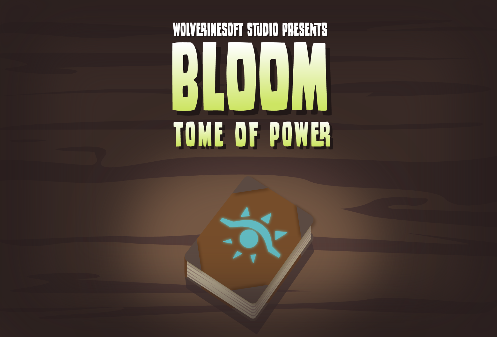

George Castle

About
Completed in one semester by around 30 University of Michigan students, Dreamwillow is a light hearted faux top down twin stick shooter about a necromancer resurrecting their foes to help them escape a dark forest.
Development Info
- Developed by WolverineSoft Studio
- 3 month development cycle (09/08/2019 - 12/08/2019)
- 30 developers
- Unity Engine
Contributions
Post-Mortem

What Went Right
- Jira Project Management Software allowed for transparency of who was working on what and how we were doing as a team
- Events-based programming allowed for abstract interfaces between code, audio, and animation
- Pod system established constant communication between different departments working on the same task

What Could Be Improved
- A lack of clear documentation guidelines and requirements led to decentralized and outdated documentation as the game grew
- Workflows evolved during production, meaning team members had to take time mid-development to learn new skills
- Lack of code reviews led to buggy code making it into production
- Small amount of time for pre-production meant many mechanics were not designed when programmers went to implement them

Lessons Learned
- Spend more time in pre-production. Don't leave any mechanics up for debate when assigning a task to programmers
- Look into using Confluence for more structured documentation
- Host more out of studio playtesting sessions
- Streamline workflows as much as possible for artists
- Clearly communicate any pivots to all team members
Contributions Breakdown
Game Design Portfolio
- George Castle
Game Prototyping & Pitching
Bloom: Tome of Power
Game Pitching
In WolverineSoft Studio, the 30-40 person student run game studio / club I help to run at the University of Michigan, each semester we have students pitch a game idea that they would like the team to create. We give a template with various questions for people to answer, and they fill it out and submit their ideas.
We tend to pick game pitches that we feel are scoped low enough that they can be created within our typical 3 month development cycle, and that best fit our team, which has a high number of 2D artists, a low number of 3D artists, and only 1-2 writers. To that end, this past summer, I pitched my first game idea, a Roguelite Retro First Person Shooter.
This game was intended to give our overwhelmingly programmer oriented team enough systems to expand on, our 2D artists work to do in animating billboarded enemy sprites, and those who wished to do 3D level design and artists who wanted to do 3D modeling a chance to shine.
My pitch ended up being chosen as one of the two games we developed that summer, and although the roguelite elements were cut, the game was eventually published on itch.io
Game Prototyping
Something that helped bolster my pitch getting chosen, was the prototype demo (password: wsoft) I solo developed in little over a week in order to showcase my pitch’s potential using previous WolverineSoft studio art assets and code base (which were expanded upon by me in order to implement game specific features, along with several game specific scripts, prefabs, and art assets)
Level Design
Bloom: Tome of Power
Level Design Team
Once production began, I took on multiple roles. The majority of my time was taken up as the game’s Art Director, but I also spent a good amount of time attending game design team meetings, explaining my original pitch ideas to team members, giving input during playtesting post mortems, and also, working as a Principal Level Designer, leading a team of 4 developers.
As a principal level designer, I was tasked to lead my team in creating the 2nd level in the game, which would introduce the player to a spell that slowed down enemies inside of an Area of Effect bubble.
Planning
Going into our greyboxing, we had 5 main goals for our level
- Introduce the player to a new spell
- Draw the player into the space
- Create a clear sightline to the end of the level from the start
- Allow players to take multiple intersecting paths through a village area
- Create a 2nd sightline back to the exit of the level near the end
Part 1: Establishing a clear starting sightline
Version #1
Our initial blocking of the village valley had major issues from the start. While the player could see the end goal (the tower in the middle of the village), they couldn’t immediately see a path to reach that location
Version #2
Our second iteration was much closer to what we wanted. Moving away from the zigzagging paths of the original version, the valley was given a slope along the side where the entrance was located. This gave the player a natural idea of where to go, and adding in the wall with a gate served to guide the player towards our intended path through the space, and a way to naturally invite them into the area. Additionally, the raised section of the wall was added to help hide the fact that several enemies waited for the player on the other side.
Final Version
Later in development, we found that it was best to place the new spell the player was supposed to try in this level directly into view from the start, so we added a room halfway up the central tower, and removed the hump in the wall that had been covering up enemies, which forced us to rework our enemy placements, but this ended up working in our favor as players were able to better familiarize themselves with the landscape before entering combat
Part 2: Intersecting Paths
Version #1
Our initial greybox had very few options for pathing, for the most part it was just a single path through the valley towards the cave entrance, with a slight zig zag to avoid the tower in the middle.
Version #2
In our second iteration, in order to start having that feeling of intersecting paths and a more open arena area, we began designing 2 main paths through the level, yellow and blue, with red representing the critical path both converge on, and the couple of sections you could cross from one path to another being green Early on we placed the new spell for the player to try just inside of the gate a little over to the right in the purple circle. Having this right leaning placement meant more players took the right path, and so we were getting less feedback on the left side of the level
Bloom Level Design
As mentioned earlier, in the final design, we moved the new spell into a room in the central tower, which greatly impacted player pathing through the level. Players no longer favored the right side, and as we also added several spots to go back and forth between paths, players began moving between the two halves of the level much more freely.
One issue that was still present though, was the weakness of the ground floor of the level. Much of the level had been designed with running around on the rooftops in mind. Several ramps were included to allow for the player to make it back up onto the roofs if they fell, but the experience of walking around on the ground itself was much too cramped.
To fix this, we moved buildings around on left side to open up a path around the left on the ground, and we also opened up space between buildings throughout, even carving into the geometry in some places. In order to pay a bit of homage to classic retro FPS titles, and in order to add a small incentive for exploration, we added secret and hard to get to areas, noted with purple arrows, to the level. The one on the right is a classic walk through the wall to reveal a hidden hallway, and the one on the left was a hard to spot cave that required a difficult jump in order to access, and both housed weapons the player tried in the previous level
Part 3: Establishing a clear ending sightline
Version #1
In the initial version of the level, the end of level sightline was actually pretty good, even being well framed by the walls of the cave exit, but there was no place for the player to stand once exiting, and it didn’t make much sense that the cave ended so abruptly. We decided to move forward by adding in a platform for the player to stand on
Final Version
In the final version, the platform we added does slightly obstruct the view of the exit, but the player can still see, and often moved out onto the platform to assess the situation before jumping in to the last fight of the level.
If I were to expand on the game in the future, I would have the platform break off when the player stands on it in order to force them into the arena!
Final Level Design Result
While we weren’t able to solve every issue we had with our level during our short 3 month total development cycle over the summer, in the end I think my team succeeded in creating an enjoyable level that has a good amount of back and forth intersecting paths, clear sightlines, and an interesting layout.